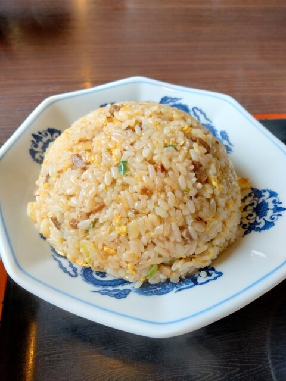

地元に愛される、手打ラーメンの名店。

豚平のラーメンは、コシともちもち感が自慢の自家製手打ち太麺。澄んだ醤油スープによく絡み、最後の一口まで飽きません。
沼津ぐるめ街道沿いで、昼時には駐車場が満車になるほどの人気。地元のファミリーやサラリーマンに長く愛され続けてきた、沼津のソウルフードです。
毎日打つコシのある自家製麺。
あっさり旨い、昔ながらの味。
サイドメニューも地元で人気。
食券を購入してから席へご案内します。昼時は混み合いますのでお早めに。